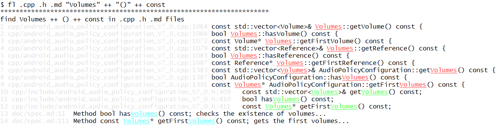

Linux bash script to find all lines or multi-line paragraphs containing a set of strings in filtered files of current folder and its subfolders recursively, in a simple way for most common usage, without need of complex regular expressions.
USAGE:
fl [-i] [-p=N] [-w] [pathstr|/pathstr]* str [+|-|++|-- str]*
DESCRIPTION:
The goal of this linux bash script (fl) is to simply and quickly display all the lines or multi-line paragraphs matching the str parameters in all the files being filtered by the pathstr parameters, see below examples.
Special characters (like *, +, |, :, ...) do not need to be escaped, they are searched directly as provided in the str parameters, which makes the usage very simple.
Binary files contents are also searched, so that as many matching lines as possible are displayed at the end and no occurrence is missed.
OPTIONS:
-i: ignore lower/upper case during the search
-p=N: consider paragraphs of 2N+1 lines during the search (N >= 1) instead of line by line search (2N+1 = N lines before first str matching line + first str matching line + N lines after first str matching line)
-w: first str to find shall be a whole word (word-constituent characters are letters, digits and underscore)
EXAMPLES:
fl str
=> find all lines containing str in all files of current folder and its subfolders
fl .c str
=> find all lines containing str in the .c files of current folder and its subfolders
fl .c .h str1 + str2 - str3
=> find all lines containing str1 and str2 and not str3 in the .c or .h files of current folder and its subfolders
fl .c .h str1 ++ str2 -- str3
=> find all lines containing str1 and then str2 and then not str3 in the .c or .h files of current folder and its subfolders
fl mypathstr str
=> find all lines containing str in the files of current folder and its subfolders whose path contains "mypathstr" ("mypathstr" in file or folder names)
fl .c /mypathstr str
=> find all lines containing str in the .c files of current folder and its subfolders whose path does not contain "mypathstr" ("mypathstr" not in file and folder names)
fl -i .c str
=> find all lines containing str in the .c files of current folder and its subfolders with lower/upper case ignored
fl -p=1 .c str1 + str2
=> find all 3 lines long paragraphs containing str1 and str2 in the .c files of current folder and its subfolders
fl -p=1 .c str1 ++ str2 -- str3
=> find all 3 lines long paragraphs containing str1 and then str2 and then not str3 in the .c files of current folder and its subfolders
fl -w .c str
=> find all lines containing the whole word "str" in the .c files of current folder and its subfolders
Of course, all operators +/-/++/-- and all options -i/-p=N/-w can be used jointly.
Examples of searches with special characters:
- Special characters can be searched directly, for example fl "(a*b+[(x/y)-z] || d == e & f)" will search exactly this string without need to escape the special characters.
- Linux shell's special characters \, $ and ` shall be escaped with \\, \$ and \` respectively. For example fl "\\xxx\$" will search all lines containing "\xxx$" in all files.
- Special characters can also be searched directly with their ASCII code, for example:
fl $'\x09' will search all lines containing tab characters (\t) in all files,
fl $'\x0D' will search all lines containing carriage return characters (\r) in all files.
Practical examples:
- search of several consecutive strings (line by line search):

- search of several consecutive strings inside 3-line paragraphs:
HOW TO GET THIS BASH SCRIPT:
👉 To get this fl bash script, go to GitHub project page:
https://github.com/simplelinuxscripts/findlines